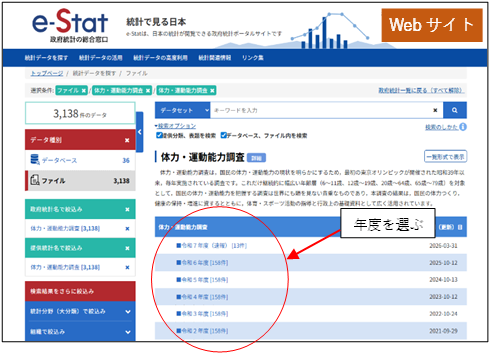
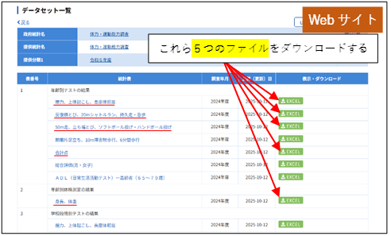
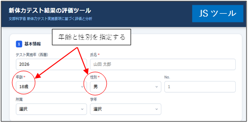
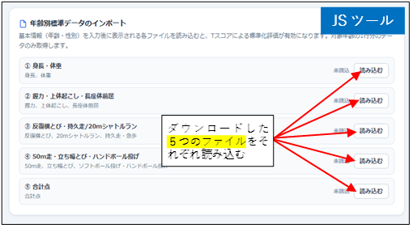

文科省の新体力テストに基づく体力・運動能力調査（スポーツ庁）に関するデータが政府統計の総合窓口（e-Stat）で年度毎に公開されている．各データにおける年齢毎の平均値および標準偏差はTスコア計算のための標準データとして利用できる．
https://www.e-stat.go.jp/stat-search/files?page=1&toukei=00402102&tstat=000001088875
新体力テストを実施した年度を選ぶ．

※平成15年度より以前はフォーマットが異なるため参照できない．

https://biomech-tools.github.io/pftest12-19/
（年齢と性別によって取り込む標準データが異なる）

Excel ファイルを ①〜⑤ に対応して読み込む（e-Statの並び順と異なるので注意）．成功すると「読込済」と表示される．
※インポート後，各Excelファイルは削除してよい．

A. Azuma
E-mail: jf9psa@jarl.com
Requests for specification changes or customisation, questions regarding operation, and inquiries regarding commercial use will not be accepted.